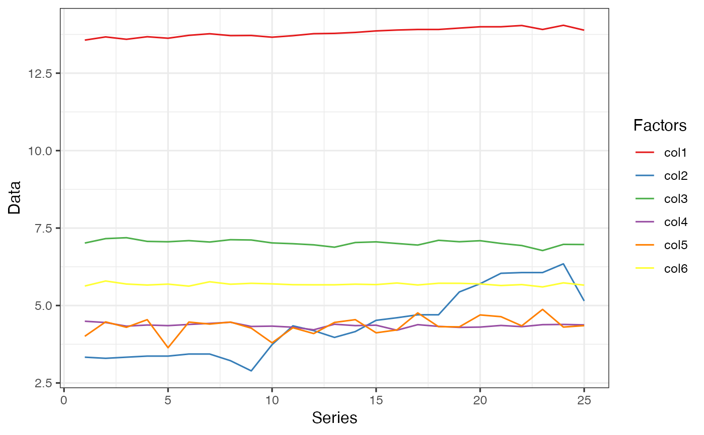
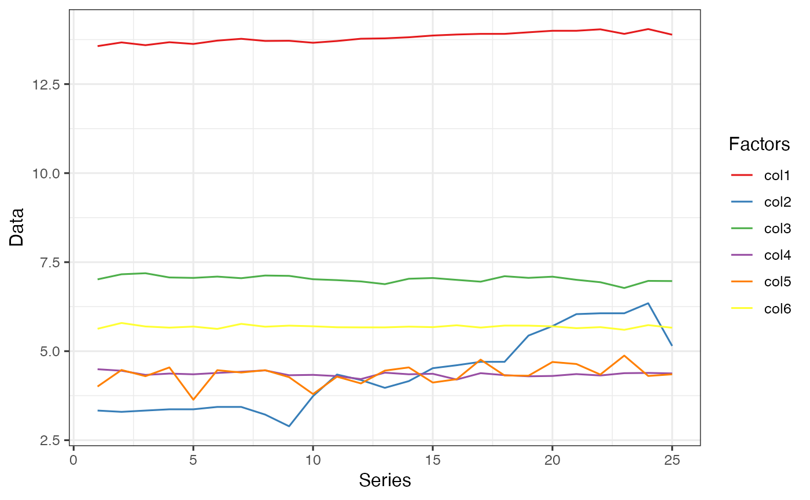

Standardize data.frame for comparable Machine Learning prediction and visualization
Source: R/data_transform.R
data_transform.RdOften economic and other Machine Learning data are of different units
or sizes making either estimation, interpretation or visualization difficult.
The solution to these issues can be handled if the data can be transformed
into unitless or data of similar magnitude. This is what data_transform
is set to do. It is simple and straight forward to use.
data_transform(data, method, margin = 2)Arguments
- data
A
data.framewith numeric data for transformation. All columns in the data are transformed- method
The type of transformation. There three options.
1is formin-maxtransformation,2is forlogtransformation and3is formean-SDtransformation.- margin
Option to either transform the data
2 == column-wiseor1 == row-wise. Defaults tocolumn-wisetransformation if no option is indicated.
Value
This function returns the output of the data transformation process as
tata_transformedA new
data.framecontaining the transformed values
Examples
library(Dyn4cast)
library(tidyverse)
#> ── Attaching core tidyverse packages ──────────────────────── tidyverse 2.0.0 ──
#> ✔ dplyr 1.1.4 ✔ purrr 1.1.0
#> ✔ forcats 1.0.1 ✔ stringr 1.5.2
#> ✔ ggplot2 4.0.0 ✔ tibble 3.3.0
#> ✔ lubridate 1.9.4 ✔ tidyr 1.3.1
#> ── Conflicts ────────────────────────────────────────── tidyverse_conflicts() ──
#> ✖ ggplot2::%+%() masks psych::%+%()
#> ✖ ggplot2::alpha() masks psych::alpha()
#> ✖ dplyr::filter() masks stats::filter()
#> ✖ dplyr::lag() masks stats::lag()
#> ℹ Use the conflicted package (<http://conflicted.r-lib.org/>) to force all conflicts to become errors
# View the data without transformation
data0 <- Transform %>%
pivot_longer(!X, names_to = "Factors", values_to = "Data")
ggplot(data = data0, aes(x = X, y = Data, fill = Factors, color = Factors)) +
geom_line() +
scale_fill_brewer(palette = "Set1") +
scale_color_brewer(palette = "Set1") +
labs(y = "Data", x = "Series", color = "Factors") +
theme_bw(base_size = 12)
# Example 1: Transformation by `min-max` method.
# You could also transform the `X column` but is is better not to.
data1 <- data_transform(Transform[, -1], 1)
data1 <- cbind(Transform[, 1], data1)
data1 <- data1 %>%
pivot_longer(!X, names_to = "Factors", values_to = "Data")
ggplot(data = data1, aes(x = X, y = Data, fill = Factors, color = Factors)) +
geom_line() +
scale_fill_brewer(palette = "Set1") +
scale_color_brewer(palette = "Set1") +
labs(y = "Data", x = "Series", color = "Factors") +
theme_bw(base_size = 12)
 # Example 2: `log` transformation
data2 <- data_transform(Transform[, -1], 2)
data2 <- cbind(Transform[, 1], data2)
data2 <- data2 %>%
pivot_longer(!X, names_to = "Factors", values_to = "Data")
ggplot(data = data2, aes(x = X, y = Data, fill = Factors, color = Factors)) +
geom_line() +
scale_fill_brewer(palette = "Set1") +
scale_color_brewer(palette = "Set1") +
labs(y = "Data", x = "Series", color = "Factors") +
theme_bw(base_size = 12)

# Example 3: `Mean-SD` transformation
data3 <- data_transform(Transform[, -1], 3)
data3 <- cbind(Transform[, 1], data3)
data3 <- data3 %>%
pivot_longer(!X, names_to = "Factors", values_to = "Data")
ggplot(data = data3, aes(x = X, y = Data, fill = Factors, color = Factors)) +
geom_line() +
scale_fill_brewer(palette = "Set1") +
scale_color_brewer(palette = "Set1") +
labs(y = "Data", x = "Series", color = "Factors") +
theme_bw(base_size = 12)
# Example 2: `log` transformation
data2 <- data_transform(Transform[, -1], 2)
data2 <- cbind(Transform[, 1], data2)
data2 <- data2 %>%
pivot_longer(!X, names_to = "Factors", values_to = "Data")
ggplot(data = data2, aes(x = X, y = Data, fill = Factors, color = Factors)) +
geom_line() +
scale_fill_brewer(palette = "Set1") +
scale_color_brewer(palette = "Set1") +
labs(y = "Data", x = "Series", color = "Factors") +
theme_bw(base_size = 12)

# Example 3: `Mean-SD` transformation
data3 <- data_transform(Transform[, -1], 3)
data3 <- cbind(Transform[, 1], data3)
data3 <- data3 %>%
pivot_longer(!X, names_to = "Factors", values_to = "Data")
ggplot(data = data3, aes(x = X, y = Data, fill = Factors, color = Factors)) +
geom_line() +
scale_fill_brewer(palette = "Set1") +
scale_color_brewer(palette = "Set1") +
labs(y = "Data", x = "Series", color = "Factors") +
theme_bw(base_size = 12)